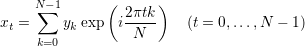

D
A naive implementation of Discrete Fourier Transform (DFT).
An auxiliary routine for
dft and idft.
F
An implementation of Cooley-Tukey Fast Fourier Transform (FFT) algorithm.
An auxiliary routine for
fft and ifft.
I
A naive implementation of Inverse Discrete Fourier Transform (IDFT),
the inverse transformation of DFT:

An implementation of Inverse Fast Fourier Transform (IFFT).
P
Constant  .
.
.